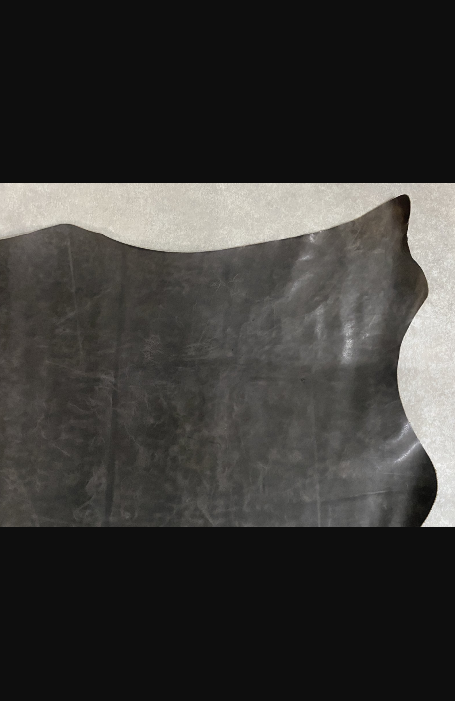

exhibit-kip_leather
キップレザーの解説ページ
キップとは
- キップレザーは、生後6か月〜2年未満の若い牛から採れる革で、カーフ（仔牛革）とステア（成牛革）の中間に位置する素材です。
- 繊維が細かく密で、吟面（表面）はなめらかで上品な印象を持ちつつ、適度な厚みとコシがあるため、日常使いに耐える丈夫さを備えています。
- 表面には細かく均一な毛穴が見られ、仕上げによって高級感のある表情が生まれます。
- 「しなやかさ」と「耐久性」のバランスに優れた革として、財布やグローブ、革小物などに幅広く使用されています。
- 欧州の高級ブランドでも、カーフと並んでキップが使われることが多く、コストパフォーマンスに優れた高品質素材として評価されています。
特徴
- 適度なしなやかさと十分な耐久性のバランス
- キメが細かく、傷が少ない美しい吟面
- カーフよりも丈夫で、ステアよりも柔らかい中間的性質
- 高級感と実用性を兼ね備えた“バランス型レザー”
- 比較的リーズナブルで流通量も多く、コスパが良い
用途
- 財布・手帳カバー・キーケースなどの革小物
- 靴（ビジネスシューズ、ローファー、登山靴など）
- バッグ・ベルトなどのファッションアイテム
- グローブやジャケットなどのアパレル
お手入れ
- 牛革全般と同様、乾いた柔らかい布で優しく拭くのが基本
- 防水スプレーや保革クリームの使用で、風合いが長持ちします
- カーフほど繊細ではないが、直射日光や水濡れには注意
ワンポイント
- キップは「カーフ」と「ステア」の中間に位置する革で、両者の良さをバランスよく持ち合わせた素材です。
- 初めての革製品選びや、長く使いたいアイテムに最適な“優等生レザー”とも言われています。
Overview
- Kip leather is made from the hide of young cattle aged 6 months to 2 years, positioned between calf and steer leather.
- It features a fine, dense grain, offering a smooth surface with moderate thickness and firmness.
- he grain side shows uniform pores, and the finish can produce a refined, luxurious appearance.
- Known for its balance of suppleness and durability, kip leather is widely used in wallets, gloves, and small leather goods.
- It is considered a **cost-effective premium material**, often used by European luxury brands.
Features
- Balanced softness and strength
- Fine grain with minimal blemishes
- More durable than calf, softer than steer
- Elegant look with practical resilience
- Reasonably priced and widely available
Uses
- Wallets, key cases, notebook covers
- Shoes and boots (business, casual, hiking)
- Bags, belts, and fashion accessories
- Apparel like gloves and jackets
Care
- Wipe gently with a soft dry cloth
- Use waterproof spray or leather conditioner
- Avoid direct sunlight and moisture
Tips
- Kip leather is a middle-ground material between calf (delicate) and steer (rugged), making it ideal for both elegance and everyday use.